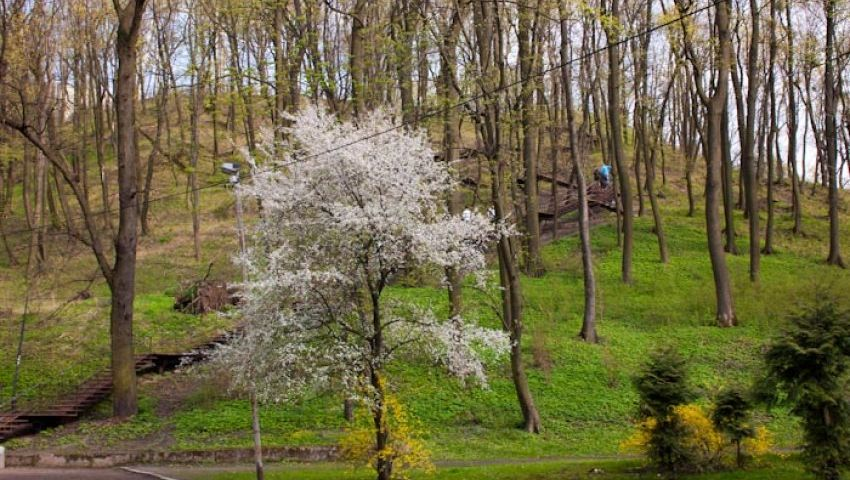
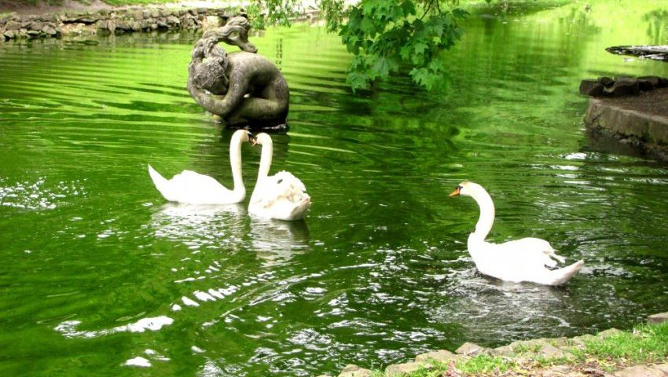

Львів чарівне місто з неймовірною кількістю пам'яток, незвичайних кафе, ресторанів, музеїв,
церков, але є ще й парки з красивою природою.
Хочу вам представити найцікавіші з них.
Зміст:
- Високий замок Стрийський парк
- Парк ім. Івана Франка
- Шевченківський гай
- Парк культури і відпочинку ім. Богдана Хмельницького
- Снопківський парк
- Ботанічний сад Львівського університету
- Залізна вода
- Погулянка
- Знесіння
Високий замок
- Високий Замок
- замок, збудований під керівництвом Короля Русі Лева Даниловича, потім — польського короля
- Казимира III на Замковій гор> у Львові. Майже повністю розібраний протягом XIX століття.
Розташований парк на Замковій горі. Перша згадка про Львів пов'язана з цією горою.
Тут є грот з левами, тераса, яка відкриває красивий вид на місто, алеї, телевізійна вежа,
кургани, монумент Максима Кривоноса і красива природа. Займає більше 30 га.
Адреса: вул.Замкова
Стрийський парк
Один з найкрасивіших парків у Львові і навіть в країні. Був створений в 1879 р.
У парку росте величезна кількість рідкісних рослин. Є чудове озеро з лебедями.
Тут є пам'ятники, тераси, дитяча залізниця і багато цікавого. Площа понад 52 га.
Адреса: вул.Паркова, Стрийська, Самчука